Color
Ink (near-black navy) dominates dark sections; lime is the sole high-saturation accent reserved for primary actions and key numbers; indigo is used sparingly for links/highlights.
#0A0C14#1C1E27#2E3040#EAF672#4A54F2#EDEDE3#555555#3A6B00#C0392B#FF6A61Typography
Font stack: Helvetica Neue, Arial, sans-serif — the system stack the live site currently ships (no custom webfont loaded). Scale consolidated from observed font sizes.
Stat blocks
Numbers are the hero — used to lead with proof (savings, clients, CO2 eliminated) rather than adjectives. Rule: stat blocks always sit on Lime 400 with ink-900 content, and use the signature-sm diagonal cut.
Capability cards
Uses the signature "cut" shape instead of uniform rounded corners. Rule: the large single-corner cut (signature-lg) is reserved for full-width cards; any card narrower than the container uses the smaller diagonal cut (signature-sm).
Frontline communication
Ensuring action at every site. Findings do not stop at head office — we get the right action to the right site team, in language they can use. Full-width cards like this one carry the signature-lg cut.
+ Learn moreMonitoring
Always-on visibility across your business premises, so problems surface before the bill does.
+ Learn morePortfolio management
One operational view across all your sites. Connecting your existing meters, BMS and IoT devices.
+ Learn moreLow carbon technology
See which low-carbon measures are worth it for each site before you invest.
+ Learn moreRadius scale
Text layouts
The canonical text stack, measured from the production hero: uppercase eyebrow (0.1em tracking) → extrabold headline (1.15 line-height) → one-sentence subtext → CTA pair. Never more than one sentence between headline and CTAs.
Multi-site energy management
Take control of your energy across every site
Lower costs and lower carbon, with no new hardware and no in-house team.
eyebrow 0.75rem/500 +16px → headline 3.64rem/800/1.15 +20px → subtext 1rem/1.4 +40px → CTAs, 16px gap
[ Capabilities ]
Everything you need to take control of rising energy costs
Heliotec brings expert energy analysis, site-level guidance and low-carbon planning into one platform.
section header: eyebrow 0.85rem/500 uppercase +12px → heading 2.4rem/700 +16px → lede 1rem, max-width 600px
Layout examples
Structural patterns measured from production. Containers: hero 1467px (gutter calc(100% − 8vw)), content 1200px, narrow text 900px, prose 600px. Section padding: 80/40 desktop, 60/24 tablet, 48/20 mobile.
Hero — 50/50 split
50% − 30px
50% − 30px
container 1467px · gap 60px · padding 160px 0 120px · scrim #00000026 over bg imagery
Stat section — ⅓ feature stat + ⅔ supporting
Lime 400 · signature-sm
value 6.4rem/800
gap 48px
main stat flex-basis 33.333% − 24px · layout gap 48px · padding 40px 32px inside stat
Section rhythm — alternate dark and light
lime is a single accent moment per page — never two lime sections adjacent
Banner anatomy
brand gradient ground · two-tone headline (lime = the offer) · fragment copy, bold closer · web-style CTA · wordmark opposite the CTA
Icons
Downloaded directly from heliotec.energy — a themed icon set shipped in three color variants (grey for default/inactive states, yellow for the accent/active state, blue for a small set of metric icons), plus a handful of inline UI SVGs (menu, carousel chevrons, LinkedIn mark).
Grey — default state
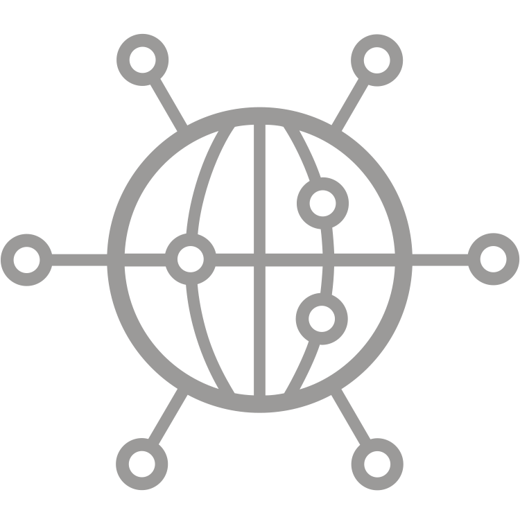
Global Technology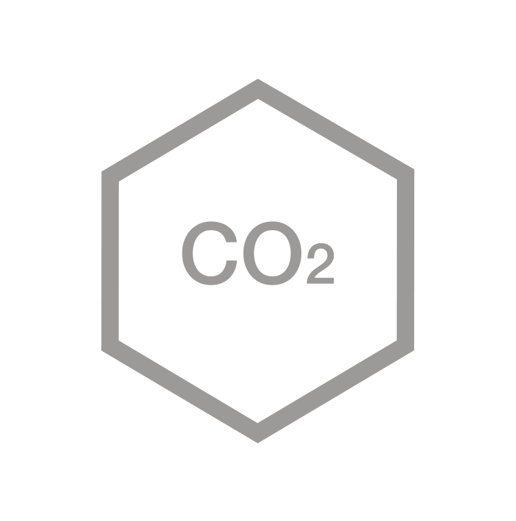
Carbon Savings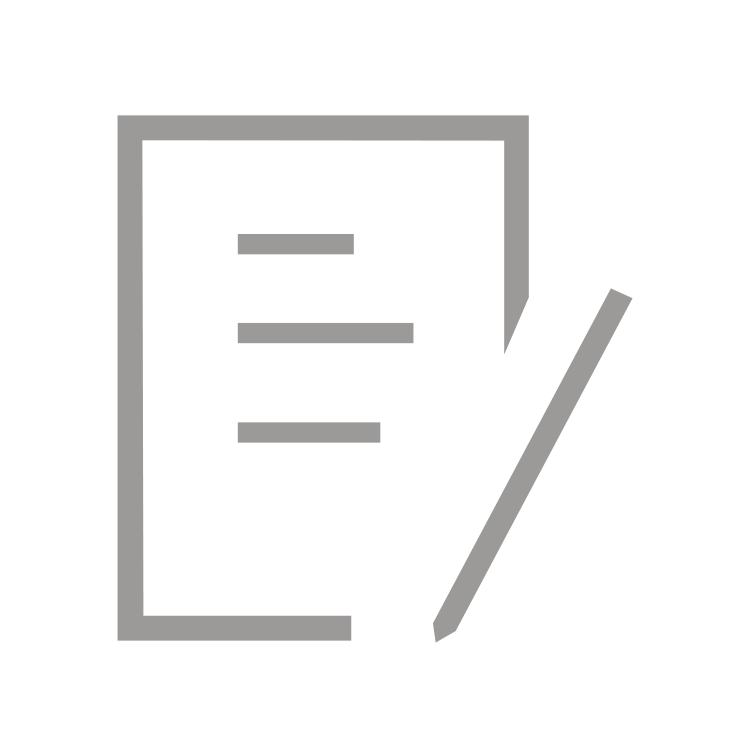
Reporting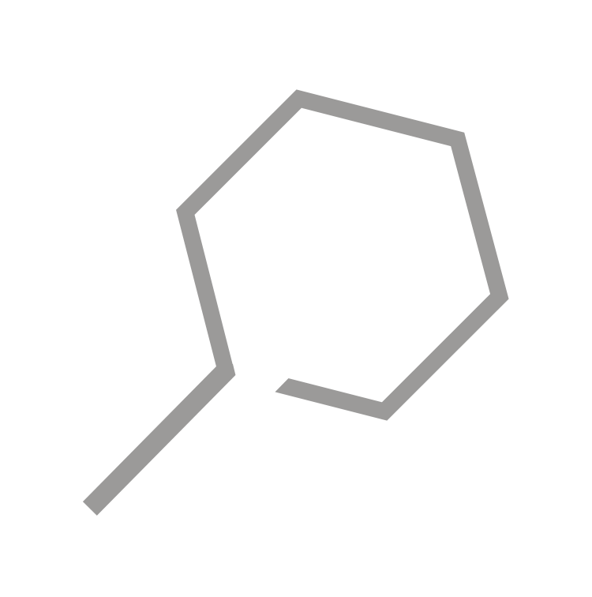
Search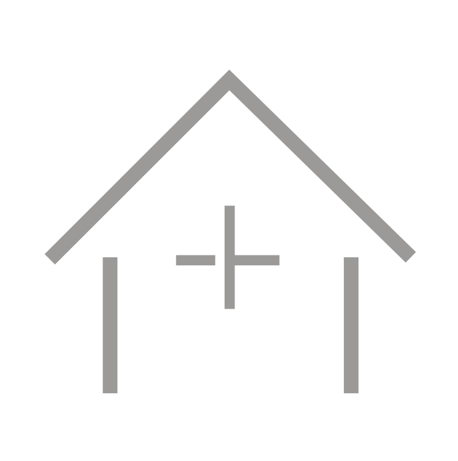
New Build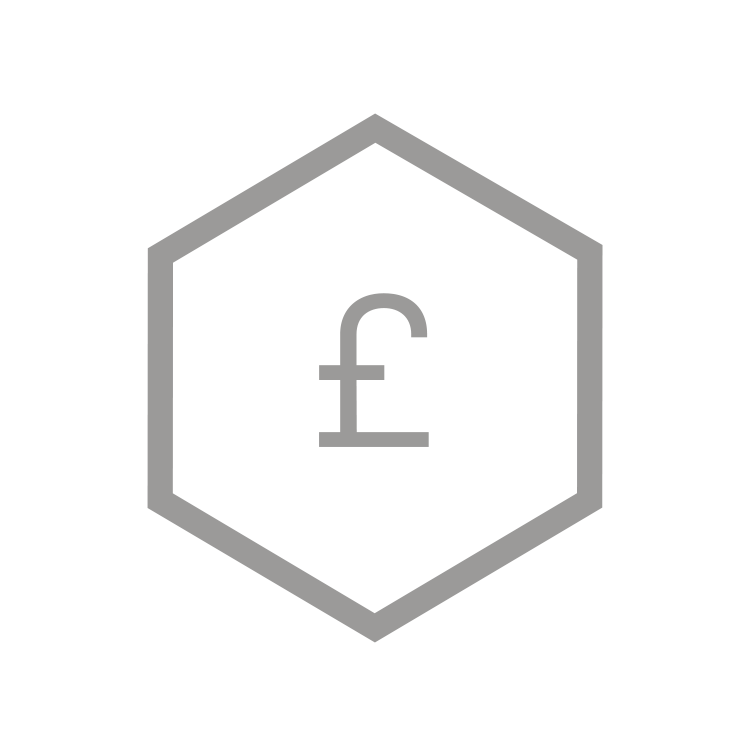
Sponsorship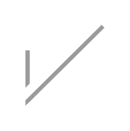
V-Sign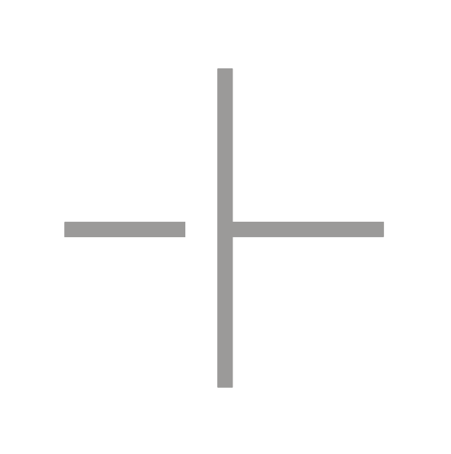
+SolutionsYellow — accent / active state
Global Technology
Carbon Savings
Reporting
Industry
Hospitality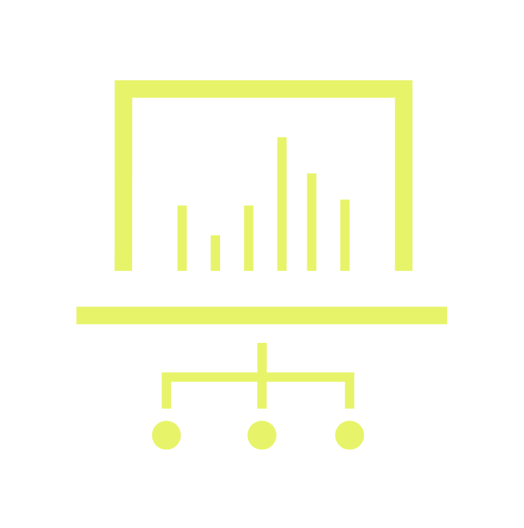
Supply Level
Day 1
Day 2
GiftBlue — metric icons
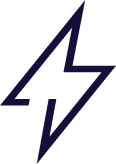
Lighting